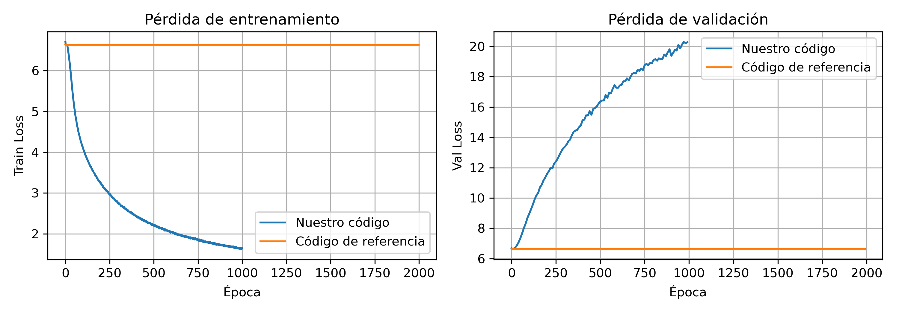

Este proyecto explora la aplicación de Decision Transformers (DT) al dominio de sistemas de recomendación, utilizando un dataset de calificaciones de películas de Netflix. La idea central es reformular el problema de recomendación como un problema de Aprendizaje por Refuerzo Offline, donde cada sesión de interacción usuario-sistema se modela como una trayectoria de un Proceso de Decisión de Markov (MDP).
Los Decision Transformers, originalmente diseñados para tareas de NLP, han demostrado ser efectivos en RL al modelar secuencias de estados, acciones y recompensas. En lugar de aprender una política mediante optimización tradicional de RL, el DT aprende a imitar comportamientos asociados a retornos altos mediante aprendizaje supervisado sobre trayectorias históricas.
Metodología
Formulación del Problema
Modelamos las interacciones como un MDP donde:
- Estado: película actual que el usuario está evaluando
- Acción: siguiente película recomendada
- Recompensa: calificación otorgada por el usuario (1-5 estrellas)
- Return-to-Go (RTG): suma de recompensas futuras esperadas
Esta formulación permite condicionar las predicciones del modelo en función del retorno deseado, una característica distintiva de los Decision Transformers.
Preprocesamiento de Datos
Partimos del dataset Netflix Prize, preprocesado para obtener:
- 752 películas únicas (ítems más frecuentes)
- 8 grupos de usuarios mediante clustering (para capturar perfiles de preferencia)
- Trayectorias de interacción con secuencias de hasta 200 timesteps
Arquitectura del Modelo
Implementamos un Decision Transformer con PyTorch incluyendo:
- Embeddings separados para estados, acciones y RTG
- Token type embeddings para distinguir tipos de token
- Embeddings de timestep para codificar posición temporal
- Embeddings de grupo de usuario para personalización
- Transformer Encoder con máscara causal que respeta el orden RTG→Estado→Acción
Hiperparámetros finales: hidden_dim=512, n_layers=2, n_heads=4, context_length=20, dropout=0.05, learning_rate=0.0001.
Problemas y Soluciones
Embeddings compartidos causaban confusión: En la implementación original, estados y acciones compartían el mismo embedding. Implementamos embeddings separados más token type embeddings explícitos.
Máscara causal incorrecta: La máscara de atención original no respetaba correctamente el orden causal dentro de cada timestep. Diseñamos una máscara causal personalizada que permite atender a timesteps anteriores y, dentro del mismo timestep, respeta el orden RTG → Estado → Acción.
Sensibilidad al return conditioning: El rendimiento variaba significativamente según el valor de RTG usado en inferencia. Realizamos experimentos sistemáticos con diferentes percentiles de RTG del conjunto de entrenamiento.
Resultados
Comparación de Modelos
| Modelo | HR@5 | NDCG@5 | HR@10 | NDCG@10 | MRR |
|---|---|---|---|---|---|
| DT Refactorizado | 0.86% | 0.54% | 1.51% | 0.75% | 1.07% |
| DT Referencia | 0.68% | 0.40% | 1.37% | 0.62% | 0.97% |
| Baseline Popularidad | 0.69% | 0.41% | 1.24% | 0.59% | 0.97% |
El modelo refactorizado supera tanto al código de referencia como al baseline de popularidad en todas las métricas.
Comparación de Loss

Curvas de entrenamiento y validación para modelo refactorizado vs referencia.
Comparación de Métricas

Métricas de evaluación (HR, NDCG, MRR) para los tres modelos comparados.
Análisis de Validación
Los resultados muestran que la arquitectura propuesta logra entrenar de manera efectiva, aunque esto no se refleja en la validación durante el entrenamiento. A primera vista, este comportamiento sugiere cierto grado de sobreajuste: el modelo disminuye su pérdida de entrenamiento pero no logra mejorar la pérdida de validación, posiblemente memorizando patrones específicos de las trayectorias. En contraste, la implementación de referencia apenas reduce su pérdida y no mejora sus métricas, incluso bajo diferentes conjuntos de hiperparámetros, estrategias de warm-up y normalización del RTG, lo que indica limitaciones intrínsecas de su arquitectura.
A pesar del sobreajuste observado, las métricas de evaluación muestran que la versión modificada supera tanto al modelo de referencia como al baseline de popularidad. Las mejoras absolutas son pequeñas pero sistemáticas, indicando que las modificaciones introducidas (embeddings separados, estructura intercalada y simplificación de la cabeza de predicción) aumentan la capacidad del modelo para capturar dinámicas usuario–ítem que los métodos más simples no logran representar.
Una posible explicación de la discrepancia entre validación y test es que la validación utiliza una función de pérdida estricta basada en cross-entropy por timestep, mientras que el test emplea métricas de ranking (HR@K, NDCG y MRR), más alineadas con la tarea real. Así, el modelo puede parecer sobreajustado en términos de pérdida, pero aun así mejorar en las métricas finales relevantes.
Hallazgos Principales
- Los embeddings separados mejoran el rendimiento: La distinción explícita entre estados y acciones permite al modelo aprender representaciones más precisas.
- La máscara causal correcta es crucial: Respetar el orden de información dentro de cada timestep mejora la capacidad predictiva.
- El return conditioning funciona: Condicionar en RTGs altos durante inferencia produce mejores recomendaciones.
- Los grupos de usuario aportan información: El embedding de grupo permite cierto grado de personalización sin requerir históricos extensos.
Conclusiones
Este proyecto demuestra que los Decision Transformers pueden aplicarse al dominio de recomendación, aunque con resultados modestos. La principal contribución fue la refactorización y mejora arquitectónica del modelo, logrando superar la implementación de referencia.
La experiencia resalta la importancia de entender profundamente la arquitectura Transformer y adaptar correctamente los componentes (embeddings, máscaras, predicción) al dominio específico. Aunque los DTs no reemplazan a métodos especializados de recomendación, ofrecen un framework unificado interesante que conecta RL y sequence modeling.
Agradecimientos
Este trabajo fue desarrollado para la materia Aprendizaje por Refuerzos en el marco de la Diplomatura en Ciencia de Datos (FAMAF, 2025). Realizado en conjunto con Felipe Ávila.